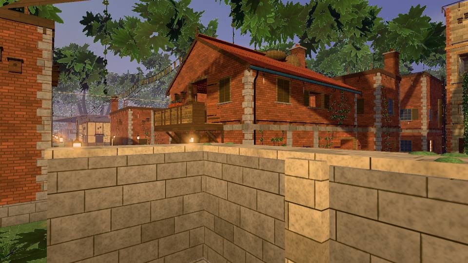
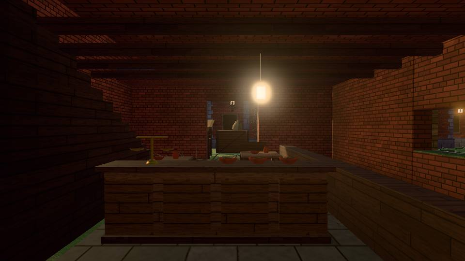
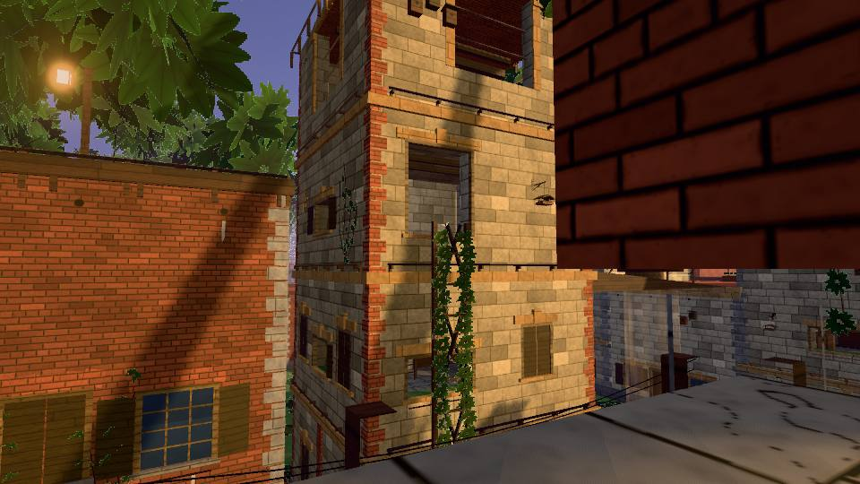
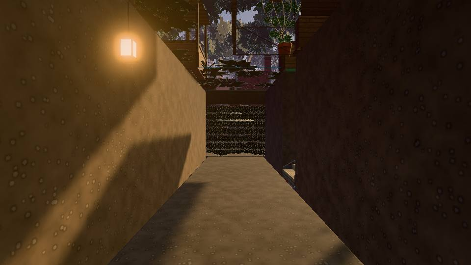
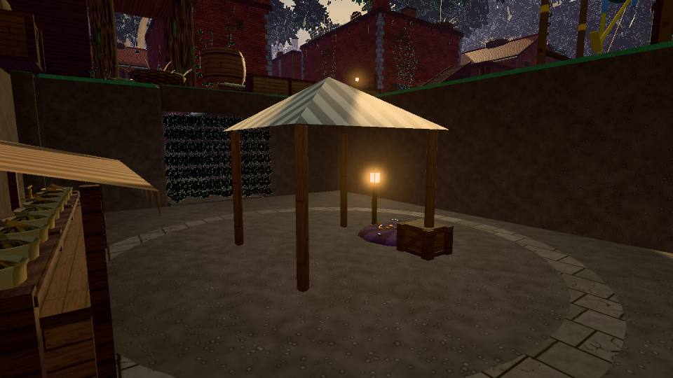

Buildings and the Cellar Run
Old Mossmarket is full of buildings, and about half of them can be entered. They give you cover, shortcuts, high ground and places to fight, and the bots use them too.
| Feature | Count |
|---|---|
| Buildings | 110 |
| Enterable buildings | 54 |
| Rooms (one per storey, plus cellars and the Cellar Run) | 100 |
| Doors | 120 |
| Arches | 60 |
| Windows | 84 |
| Leap windows (to jump through) | 28 |
| Roof hatches and ladder holes | 44 |
| Balconies | 20 |
| Street grates into cellars | 4 |
| Building | On the map | Enterable |
|---|---|---|
| Dovecote | 2 | 2 |
| Granary | 4 | 4 |
| Warehouse | 4 | 4 |
| Tavern | 4 | 4 |
| Hollow tree | 4 | 4 |
| Bell tower | 4 | 4 |
| Market hall | 2 | 2 |
| Hide | 8 | 8 |
| Block | 24 | 0 |
| Water mill | 2 | 2 |
| Terrace house | 44 | 14 |
| Seed exchange | 2 | 2 |
| Stilt house | 4 | 4 |
| Sawmill | 2 | 0 |
Going in
- Every enterable building has at least two ways in on the ground floor, on different sides: doors, arches or windows.
- Windows come in two kinds. A shot window is a gap for shooting through, and a leap window is big enough to jump through.
- Taller buildings have stairs between floors. Some have ladders or hatches, and skylights let you drop to the floor below. Floors are four metres apart.
- Many buildings have a flat roof you can stand on, with a low wall round it. Reach it by stairs, a ladder or hatch, or from outside by a Chimney, a Vine or a ledge. Several roofs sit beside the lanes so you can drop from the roof to the street.
- Some buildings have a balcony over the lane.
- A Bough Spring is a pad that flings you up and across to a landing: see Berries, Hides, Lookouts and Springs.


The quarters
Each lane has its character (see Old Mossmarket). Between the lanes, each side of the map has jungle quarters named for what is in them: Gatefields near the base, Lantern Row in the middle and the Old Square near the centre. They hold the Taverns, Granaries, Warehouses, the Bell Towers, the Market Hall (west) and the Water Mill (east), along with the Thicket camps and Nests described under Objectives and the jungle.

The Cellar Run
Under the Riverbank lane in each half of the map runs the Cellar Run, a tunnel four metres wide. It joins the cellar of the west Tavern to the cellar of the east one. You get in by the Tavern cellars, by stairs beside the lane, or through a street grate from the Market Hall or Water Mill undercroft. The Egg carrier cannot use it.


The Magpie Den
Halfway along each Cellar Run is a Magpie Den: a shop that both flocks can use, unlike the stalls and the Home Roost that belong to one flock. Nests below ground appear from 5:00, so it is worth a look even when you do not need to buy.